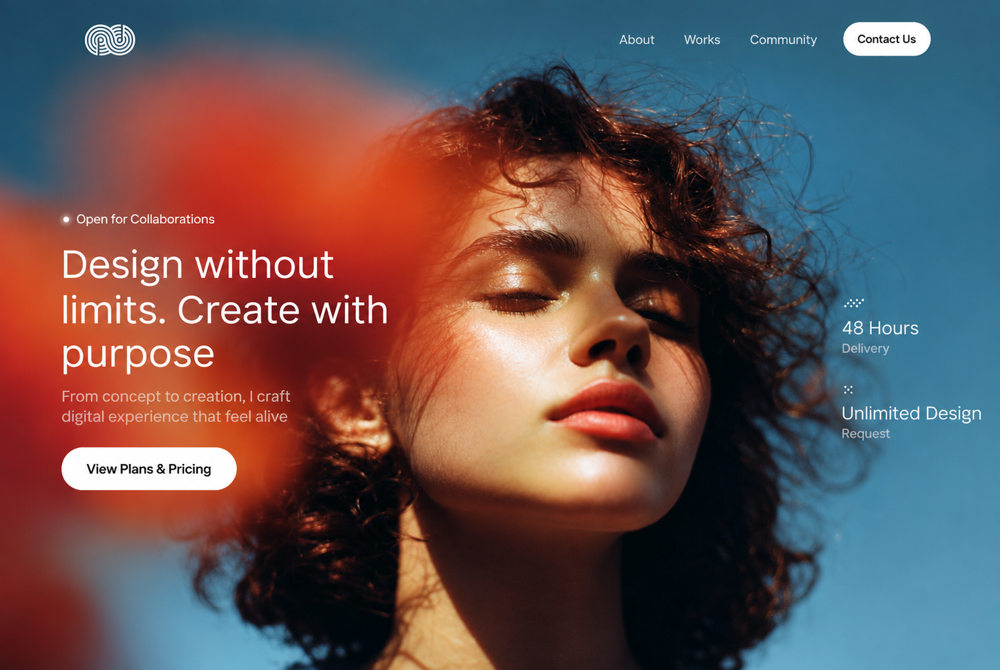
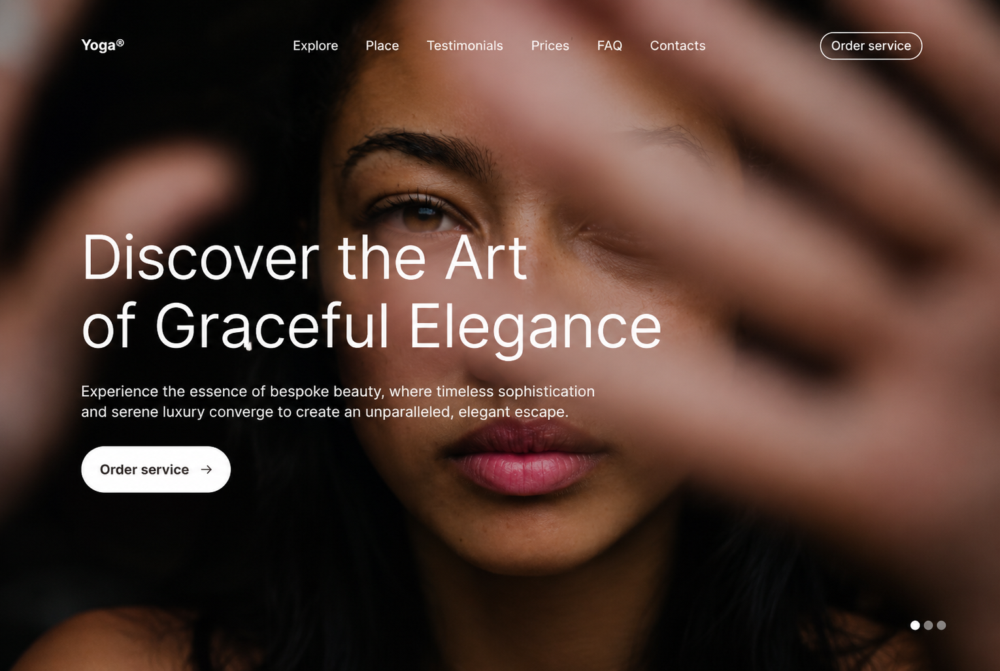
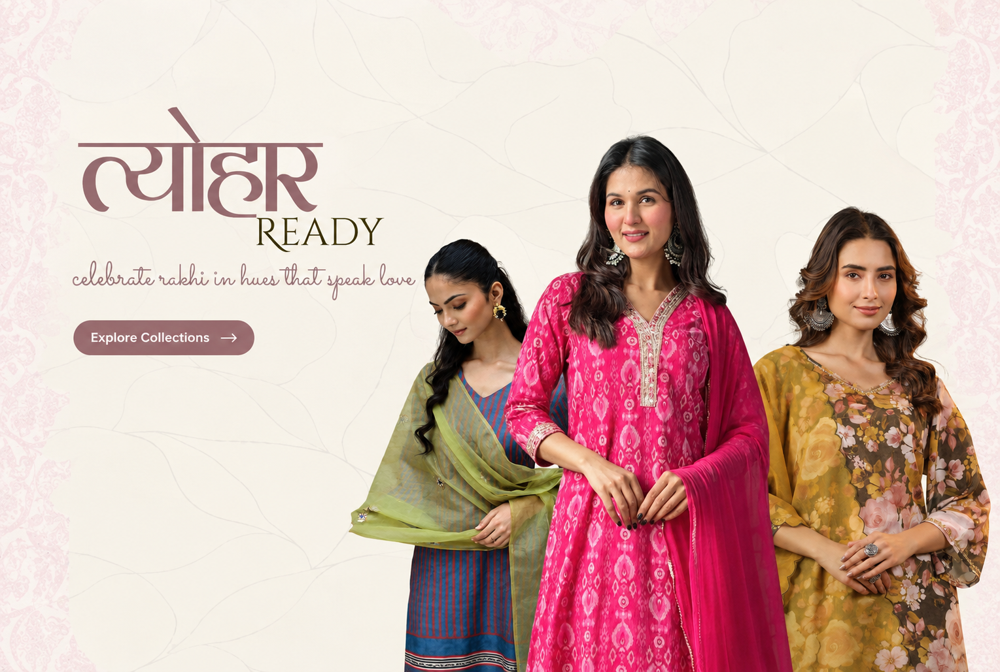
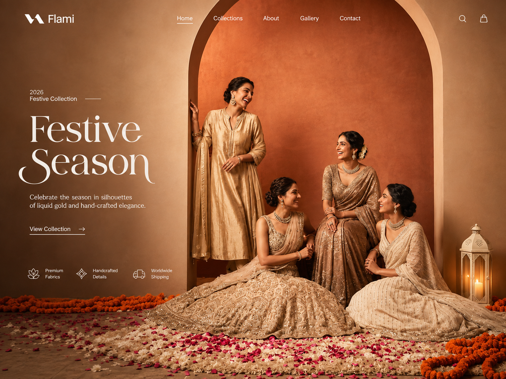
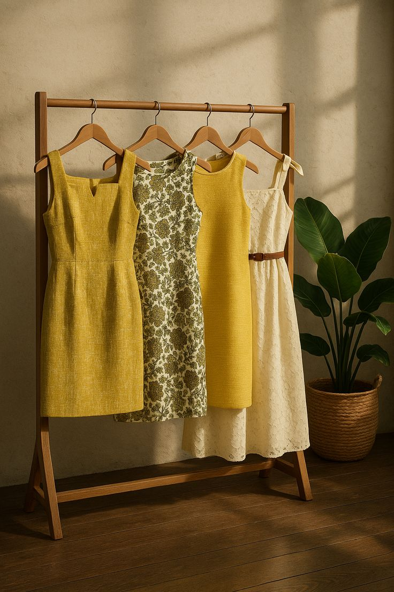
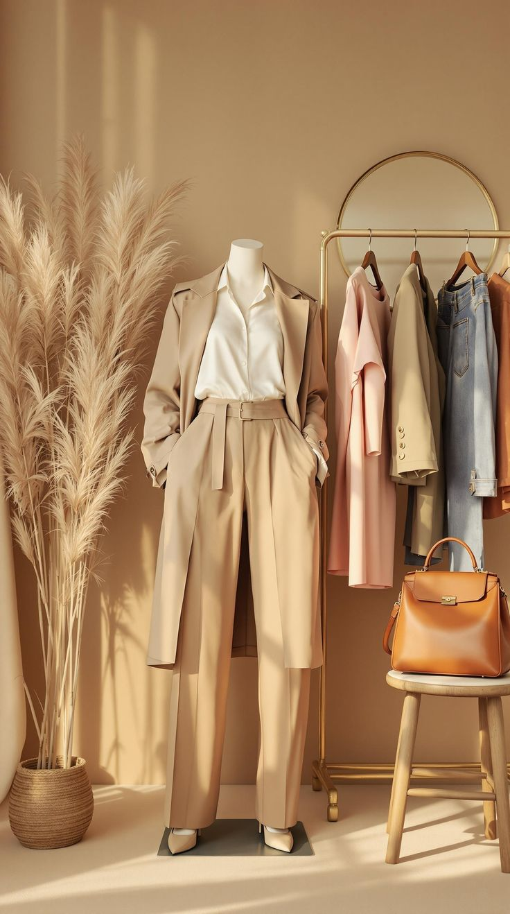
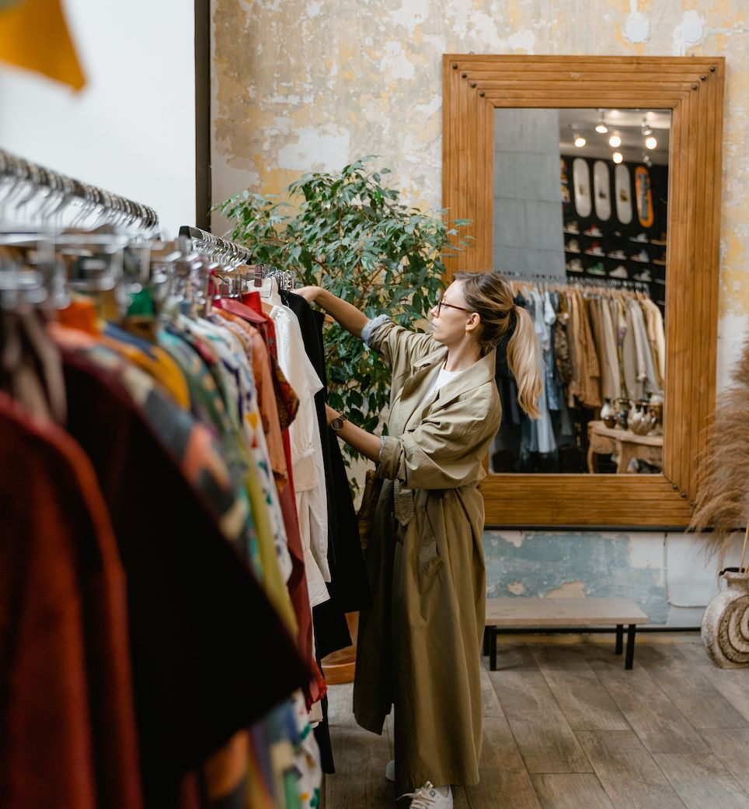
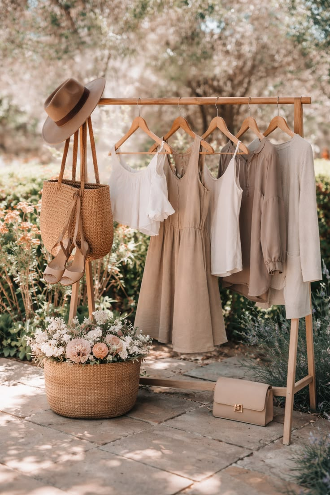
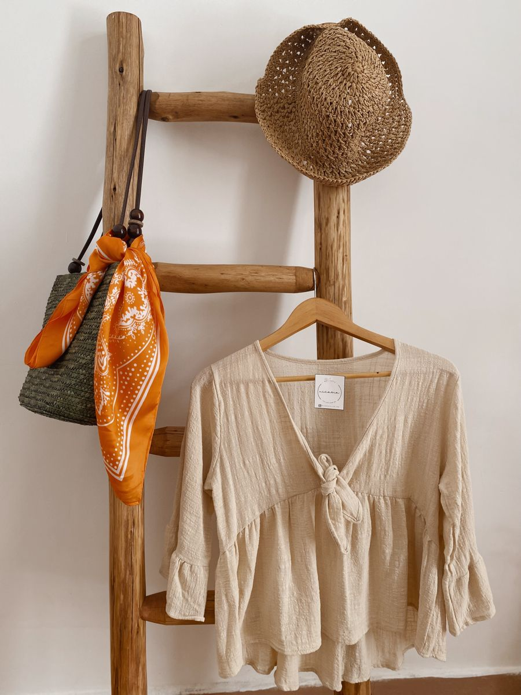

Fabric first
Softness, movement and staying power guide every material choice.




The autumn edit / 2026
Where Elegance Meets Expression
Curated for now
The Kalaah standard
We make thoughtfully finished pieces for real calendars: workdays, dinners, celebrations and everything in between. Every collection is designed in small runs, so it feels personal from the first wear.
Read our storySoftness, movement and staying power guide every material choice.
Silhouettes designed to move naturally and feel good all day.
Quiet details and careful finishing make a lasting difference.
Find your silhouette
Kalaah film 01 / 10
An easy silhouette, a little intention, and the confidence of knowing your outfit already has the moment handled.
A piece of your own
Our studio can refine the fit, length, sleeve or styling of select Kalaah pieces. Tell us the occasion and the way you like to dress; we will help you find the version that fits your life.
From the studio to you
Everything you need to know before a Kalaah piece arrives at your door.
Find the silhouette that catches your eye, or begin with a category.
Select your size, then leave a note if you would like help with styling or fit.
Your piece is checked, pressed and wrapped with care by our studio team.
Enjoy it, make memories in it, and let it become part of your signature.
Worn and loved
“The fit was effortless and the fabric felt even better by the end of the day.
Meera, Mumbai
“My Kalaah set is the piece I reach for when I want to feel pulled together in seconds.
Rhea, Bengaluru
“Every detail felt considered, from the silhouette to the way it arrived at my door.
Amrita, Delhi
Good to know
Use the size guide on each product page. For an in-between fit or a styling question, leave us a note through the contact page and our studio will help.
Selected Kalaah styles can be refined for fit. Contact us before ordering with the piece and adjustment you have in mind.
Ready pieces are prepared within two working days. Made-to-order or altered pieces take a little longer; we will confirm the timeline before production begins.
Care guidance is included on every product page and with your order. When in doubt, gentle handling and a good dry clean will keep special fabrics at their best.
Made for your becoming
Considered silhouettes, honest materials, and the small details that turn a daily ritual into a signature.
Meet our studioFollow along




